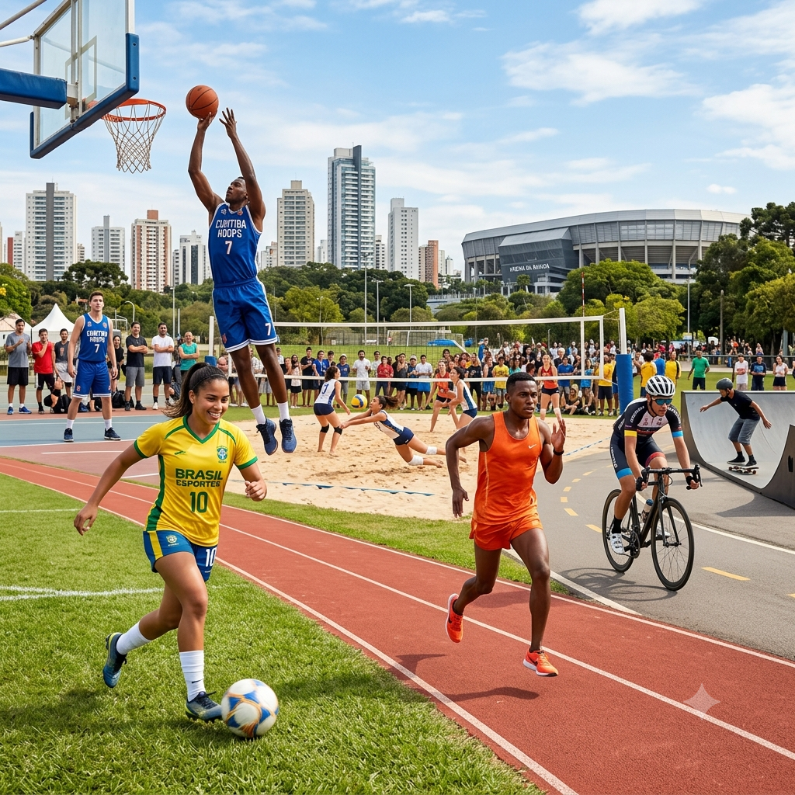

Bem-Vindos ao conhecimento esportes
Por: Dilmara
Fala, pessoal! Sejam muito bem-vindos ao meu espaço!
Fala, galera! Sejam muito bem-vindos ao meu espaço! Todos me chamam de Jory, e criei o Joryverso — com essa vibe icônica em roxo e verde — para ser o nosso ponto de encontro oficial para falar sobre animes de um jeito leve, sincero e sem enrolação. Por aqui, vou soltar as melhores indicações, comentar os lançamentos da temporada e falar a real sobre o que vale ou não a pena assistir, então fiquem à vontade para debater nos comentários e me contar logo de cara: qual é o anime favorito da vida de vocês? ��✨